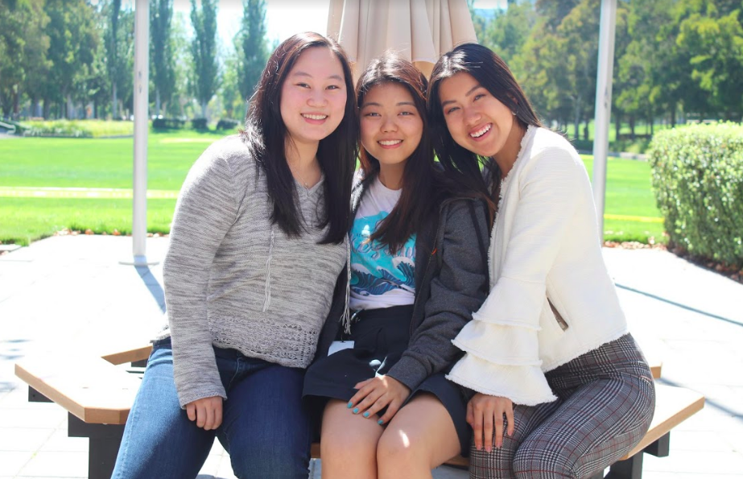
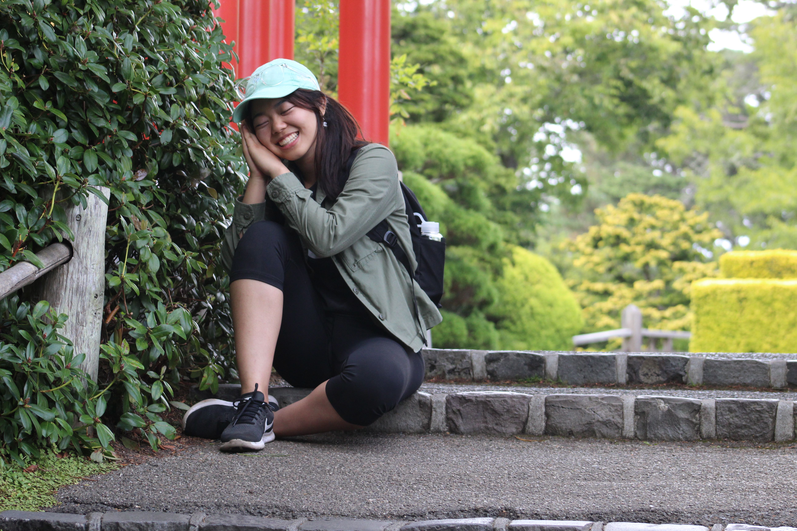
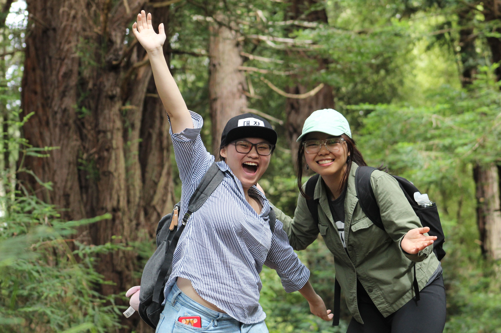

Summer 2018 Blog >
I like to cook food that's a little too spicy, read novels about resilient characters, and be a part of projects that do social good.
I led the technical side of a start up to combat the air pollution in India with peers from my school. Here's an article about us from the school newspaper. I'm also leading a project for the Chicago Department of Public Health (CDPH) on improving the reporting system of critical and contagious diseases for public safety with five other developers. It's currently in the process of alpha testing at the CDPH.
Interests: volunteering, data visualization, fashion, drawing, fishing, big dogs, learning, time management, ssb4
Bucket list: crabbing in Alaska, taking a pottery class, learning to drive, becoming CPR certified, adopting a cat, working as a barista, capturing Suicune on Gold or Silver, riding a tandem bike with my best friend, accurately predicting the weather in Chicago
...
what else do i do:
hire me (résumé, July 2018)
github
Friday Sept 14th!

It's the last day of my internship at EA. I really had a great time here and I'm a bit sad to say
that it's over. I was able to quickly wrap up my project and document everything as well as I could
in the time remaining. There are many things I wish I could continue working on if I had the time,
but there's nothing I regret in terms of how I used my time in the last two weeks. I got to demo
my project several times to lots of people (more than I thought), and I actually got the opportunity
to practice many times in preparation.
I met lots of cool people at EA, including my team and the other interns. I feel really lucky to have
gotten such a friendly and welcoming team at EA. I've never seen a team with such good chemistry
as the one I was placed with (where they would actually even hang out outside the company :O ).
I'm going to miss a lot of my intern friends as well (see two of them in the above picture).
LOL I'd actually be quite embarrassed if either of them see this website. But if they are reading this,
definitely know that I think you two are really awesome people and it was great hanging out together
(especially *darts* and *the bus*). There are also a lot of other interns who I'm really glad to have met,
and I sincerely hope at some point in the future we would meet again!
SF Bay Area has been really nice. It's uncertain when I would come back but I think if I stick with
tech (most likely), I'll surely be back. Well that's it for this summer blog--which I've only updated
four times haha, but good enough! Thanks for reading.
Sunday August 5th!
Destination: Pacifica State Beach
Mission: See some dogs perform something extraodinary
I've known about the existence of dog surfing for a while, but I've never known how real it is
until now. Well, it's kind of actually real. These dogs do indeed go on surfboards with life jackets
on and they do ride a small wave into the sand (though, more often than not, crash into the water).
I was really lucky to have a friend who drove us along the west coast of the Bay Area to see some
beaches and check out this event. There were so, so many dogs and so much happiness in the air.
If I could just bottle some of it up and bring it with me back to UChicago, where it definitely gets
eerie and gloomy at times, it would be so very valuable. I'm glad I got the chance to witness dog
surfing in person.
Later that evening, I attended a networking event at the California Academy of Sciences for D.E. Shaw & Co.
They actually rented out the place for the evening, with museum staff to display exhibits in the
rainforest and aquarium part of the museum. It was refreshing to get this new kind of exposure to
a company with an educational component, but I'm not too sure what the point of bringing in the
stir-fried ice cream stand was.
We got to chat casually with current employees there and I have a few take-aways from the event:
D.E. Shaw likes to recruit kind people who like to learn and are very good at \something\.
While not all, many of the employees have a PhD in \something\, and the idea is whatever skills
helped them become very good at the \something\ can be transferable to the work they will be
doing at the company. Seems like they treat their employees very well, but I can't
say for sure if they are my ideal kind of company yet.
It was kind of tricky getting home to Atherton from a place so far away, but I managed to combine
walking + light rail + uber, to get home safe and sound.
Wednesday July 25th!

I arrive at the Japanese Zen Garden in the Golden Gate Park. Despite overflowing tourists
covering each corner of the garden, I find myself in a very peaceful state of zen--perfect
for some de-stressing meditation! So calming that I actually in fact take a brief
energizing nap with my friend on look out!
Did ya notice it's a Wednesday? Maybe you're wondering how I got out of work :^)
I would like to preface that I love work very much so I worked extra on the other weekdays so that
I could take a day off to show my elementary school friend, who is visiting me here,
all the touristy hot spots.
This is us :)

We began the day pretty early to catch a Caltrain up to San Francisco (4th and King). I brought my
[brother's] camera to complete our appearance as tourists and to snap some picturesque shots of SF.
Yelp suggested that we stop by at Tacorea to grab some fusion Korean and
Mexican food--which we did--and it was delicious. I will say that one burrito is very filling and if
you're cautious of falling into a midday food coma, maybe just share one with a friend for a meal?
I definitely recommend getting their California burrito.
We ended up taking the light rail and going all the way to the Golden Gate park and explored the rose
garden and of course, the Japanese Zen Garden. We actually took a detour after the rose garden; after
spotting some wild mushrooms and discovering the scenic woods hidden below the rose garden, we slid
down the hill to get to the woods. It was there where we took the nice picture above :)
Monday July 16th!

It's my first time in California. I'm over at Silicon Valley for a summer internship and the
weather is ridiculously perfect every day.
- Golden Gate Bridge
- Fisherman's Wharf, Pier 39
- Golden Gate Park (Japanese Zen Garden, Rose Garden)
- Chinatown, Japantown
- Stanford University
- The entirety of Menlo Park
- A quarter of Palo Alto
- A farmer's market
- more beaches
- A dog surfing competition
- aquarium, rainforest
- Get dim sum! (@Dragon Beaux)
- Ambitiously order really spicy ramen that I will quickly regret ordering but then finish all of it (@ Ramen Nagi )
- Eat something so spicy that it requires a waiver (@Red Hot Chilli Pepper)